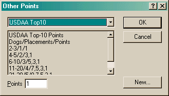

The Other Points dialog allows you to create or edit other points you may have earned that are not directly recognized by Agility Record Book.

This dialog allows you to select a pre-configured Other Points. Simply fill in the number of points you have earned. Each time you change the Other Points in the list, the description below it will be updated.
If you need to create Other Points for an item that is not listed (for instance, breed points), you must first modify the configuration and create an entry for this.